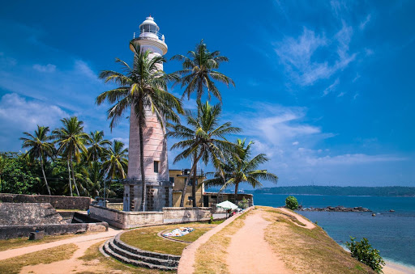
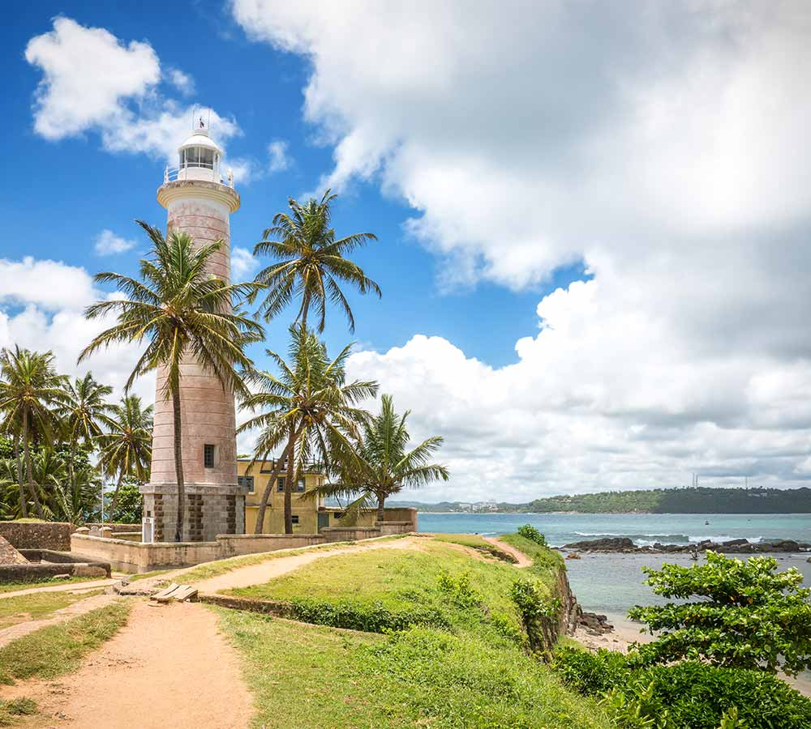

1 / 6

Galle Clock Tower
2 / 6

Galle Lighthouse
3 / 6

Galle Lighthouse
4 / 6

Pedarel Street
5 / 6

Inside of fort
6 / 6

Sea Side Enterence
Galle Dutch Fort, Dutch Reformed Church,
The National Museum of Galle, Jungle Beach, Japanese Peace Pagoda,
Old Gate, Galle Fort, Historical Mansion Museum, Galle Fort Clock Tower, Sea Turtle Hatchery,
Maritime Museum, Galle Lighthouse, St Joseph’s Chapel, St. Mary's Cathedral,
Mahamodara Sea Turtle Hatchery Centre and many more places.
You might be astounded to know that there are a number of places to visit in Galle
which could make you extend your trip by a few more days to visit this historic city.
Walking through the streets of Galle is like walking into history when you soak in the past via its colonial splendours.
You would need an entire day to visit the Galle Dutch Fort to not just witness the life and areas that still exist there,
but to cover all the other monuments that are stationed within this establishmen
Amongst the many tourist places in Galle, you will find that the beaches in this city brighten your day into a fun one like the Pitiwella Beach,
Jungle Beach, Unawatuna Beach and Mihiripenna Beach.
The Sea Turtle Hatchery and the Mahamodara Sea
Turtle Hatchery Centre is a glaze on the cake of this stunning journey you will experience in Galle
In the Bay of Galle on the southwest coast of Sri Lanka,
was built first in 1588 by the Portuguese, then extensively fortified by the Dutch during the 17th century from 1649 onwards.
It is a historical, archaeological and architectural heritage monument,
which even after more than 432 years maintains a polished appearance,
due to extensive reconstruction work done by Archaeological Department of Sri Lanka.
The fort has a colourful history, and today has a multi-ethnic and multi-religious population.
The Sri Lankan government and many Dutch people who still own some of the properties inside the fort are
looking at making this one of the modern wonders of the world.The heritage value of the fort has
been recognized by the UNESCO and the site has been inscribed as a cultural heritage UNESCO World
Heritage Site under criteria iv, for its unique exposition of "an urban ensemble which illustrates
the interaction of European architecture and South Asian traditions from the 16th to the 19th centuries
Galle Fort is in Galle, which is located at the extreme southwest corner of the island,
in the southwest coast of Sri Lanka, where the shoreline turns east towards Matara and Tangalle.
The fort, like most of the forts in Sri Lanka, is built on a small rocky peninsula, belonging to the sea as much as to the land.
As it exists today, it covers an area of 52 hectares (130 acres)
The fort, originally built by the Portuguese in the 16th century to defend Galle,
was an earthen structure with pallisades covering the northern inland side with a rampart and three bastions.
When the fort came under the control of the Dutch,
they considered the old fortifications built by the Portuguese unsafe as they were made of earth and palisades.
Hence, the Dutch decided to fully encircle the entire peninsula by building impregnable fortifications as defense against other colonial
agencies in the region.
Galle Fort has two, formerly portcullis, gates.
The oldest of the two was completed by the Dutch in 1669.
At the time it was protected by a drawbridge and a ditch.
It can be found on the southern end of the Baladaksha Mawatha (street).
Unawatuna is one of the most popular beaches in the South as well as the entire island.
It is popularly known as a family friendly area especially with the shallow water levels most ideal for swimming.
Locals flock in the evening to bathe in the sea.
The west end of the beach leads to some rocks and stairs to go up a small hill with a pagoda and a big Buddha statue.
It makes for a nice little walk with a beautiful view overlooking the beach.
This banana-shaped golden sandy beach with its turquoise water is usually crowded during the day with both locals and tourists.
Families, including children, come to bathe in this amazing beach which has the best waves for swimming.
There are sunbeds for rent and many guesthouses bordering this beach which is surrounded by palm trees.
Behind the beach, leads to a road filled entirely with a variety of vendors selling all types of goods including clothes,
jewelry and souvenirs.


At Unawatuna, we have around 16 different Dive Sites with different depths
from 6 to 30 meters offering a vibrant variety of dives like Reef Dives, Rock Dives, Wreck Dives and Night Dives.
Most of the reef dive sites have a mix of hard and soft corals going to the depth of 18 meters.
In 1997 the “El Nino” surface current with high water temperatures reached the west and south coast of Sri Lanka
and bleached a lot of the coral reefs. Since this time coral started rejuvenating at a very slow rate.
At the deeper dive sites, the topography consists of mostly rocky areas with deep valleys to explore.
Close to the Galle harbour, there are magnificent wrecks on sandy grounds giving home a number of species of corals and fish life.
The famous “Rangoon” Wreck lies at a depth of 30 meters, the SS Orestes, at a depth of 22 meters,
and the Galle Ship Wreck at a depth of 18 meters.
Hidden amongst the trees of the Unawatuna rainforests and yet visible across the water from the historic Galle Fort
in the Bay of Galle is the “Sama Ceitya”, one of four Japanese Peace Pagodas that can be found in Sri Lanka.
Situated on Rummasala Hill, it was built with the assistance of Japanese Buddhist monks in 2005
(when Sri Lanka was still in the midst of fighting a devastating civil war) as part of a plan to build temples of peace in conflict zones.
Today, it acts as a symbol of peace for the Buddhist-majority country of Sri Lanka,
but its clean, rounded design is intended to represent harmony between people of any and all backgrounds.
The immense white stupa that rises out of the Japanese Peace Pagoda is surrounded by statues painted in gold,
while a nearby flight of stairs leads to a walkway that goes around the shrine, offering breath-taking views of the jungle,
the sea, and the stunning Galle Fort.

The beaches in Hikkaduwa have been attracting tourists since the 1960s when it was first discovered.
The beach stretches on spanning over kilometers and hosts many fun activities to keep the tourists engaged.
These water sports include snorkeling and scuba diving for the adventure seekers.
The clear waters beckon the nature lovers who wish to take a dip inside the waters to witness the vibrant, colorful aquatic life.
The coral sanctuary hosts gorgeous coral formations, which house a variety of fishes and large turtles.
The islets along the beach breed pockets of wildlife and are a wonderful way to interact with it.
Hikkaduwa is famous for serving delicious seafood curries, relaxing massages, Buddhist temples,
and watersports such as surfing, snorkeling, and diving. The beaches in Hikkaduwa may not be at
par with Bali or Goa, but it does attract a fair amount of regulars.
The Narigama Beach is the most popular beach in Hikkaduwa
and sees the maximum influx of tourists. The Narigama beach stretches on for about 4 kilometers and is a perfect surfing spot
during the months from April to October. The sea water is calmer during the winters.
The beautiful hues splashed into the sky by the setting sun make the beach appear like a scene from a film or a photograph.
Thus, watching the sun dip behind the waters of the Narigama Beach is a treat for the eyes.

The Hikkaduwa beach is suited for water sports such as snorkeling, swimming, surfing, scuba diving, body surfing,and boating. You could book a seat on a boat with a transparent bottom where you can closely observe shoals of fishes and other interesting aquatic creatures. If you wish to observe them more closely in the clear waters, you could sign up for one of the scuba diving or snorkeling courses at the PADI certified dive centers. The carefully planned and monitored trips will ensure that the environment stays unaffected by these activities
Hikkaduwa was affected by the tsunami caused by the 2004 Indian Ocean earthquake along with nearby villages Telwatta, Paraliya (site of the Queen of the Sea rail disaster), Dodanduwa, Kahawa and Rathgama. In the aftermath of the tsunami, many of the families who had lost everything were given sewing machines as part of the relief operations. As a result, the town has a multitude of tailors who will custom-make shirts, trousers, and shorts
Hikkaduwa is a coastal town in Galle district of Sri Lanka.
Hikkaduwa is a major tourist attraction in Sri Lanka and
is known for its beaches and corals.
It is located in the Southern Province, about 17 km (11 mi)
north-west of Galle and 98 km (61 mi) south of Colombo.
Despite significant development in the last decade it is still
home to the endangered and endemic purple-faced langur,
an usually shy monkey species that can only be found
in Sri Lanka's forests.
The colorful coral reefs are definitely worth a visit before climate change upsets the critical balance of nature. Sri Lankas vibrant coral reefs are home to a range of aquatic wildlife. They house a variety of fishes. Apart from the coral reefs, the sea turtles are yet another major attraction. You could feed these turtles by hand! The turtles often bury their eggs into the sands of the Hikkaduwa beach, and if you are lucky enough you can even watch new hatchlings make their way into the sea!
The Laguna is a pool of shallow water covered by coral reefs on either side. These coral reefs break the waves making this portion of the beach devoid of any waves. Thus, it is an ideal spot if you or the kids accompanying you wish to enter the seas. Families flock to this beach to rest and splash around the cool waters to beat the heat. You could even book a catamaran to ferry you around the placid waters. In the wee hours of the morning, you could find exotic fishes around the shallow coral area.
On the North and South coast of
Hikkaduwa is a couple of farms of ocean turtles,
which is among
the best places to visit in Hikkaduwa.
The closest is a
little private farm which is only a couple of kilometers
North of Hikkaduwa.
On the ranch in bigger basins,
you can view distinctive types of turtles during your farm visit.
Typically, on ranches additionally, you will get the
chance to view the lay eggs of the turtles.
What’s more,
in a few spots you will even get to release the
baby turtles into the open ocean at an extra charge.
Turtles are best seen beginning from the month of March to April.
The Galle Lighthouse (also known as the Pointe de Galle Light) is Sri Lanka’s oldest light station, dating back to the mid-19th century and situated within the walls of the Galle Fort, a UNESCO World Heritage Site. The original Galle Lighthouse was established by the British in 1848 and was the first onshore lighthouse in the area, standing at 24.5 metres tall with a full view of the Galle Harbour. In 1934, a devastating fire destroyed the old lighthouse. This led to the construction of the current lighthouse in 1939, which stands taller than the original at 26.5 metres high and around 100 metres away from the site of its predecessor

The Galle Lighthouse is located about 4 kilometres away from Galle’s city centre, and has been built on the ramparts, approximately 6 metres above the level of the road, on a high point known as Point Utrecht Bastion. The original lighthouse contained a glass prism that sat within a mercury bath, which kept the lamp level and allowed it to rotate without undue friction. Lighthouse keepers were in charge of removing dirt and debris from the top of the bath, as well as periodically cleaning the liquid mercury, which exposed them daily to highly toxic levels of the metal. Today, however, the light within the Galle Lighthouse is fully automated, and the lighthouse keeper in charge need only climb up to ensure its upkeep.
Galle harbour was a major harbour in the country,
which was in use even during the pre-Christian times, but gained importance after the 12th century.
By the 14th century, Galle harbour was the most important harbour in Sri Lanka and retained its importance until
1873 when an artificial harbour was built in Colombo. After the construction of Galle Fort in the 17th century Galle
port was a major port in the Indian Ocean for more than 200 years, which was an important anchorage for boats and ships
traveling between Europe and Asia.
When the British colonial government constructed breakwaters in the Colombo Harbour
in late 19th century, much international marine traffic shifted to Colombo from Galle.Thereafter Galle port became a secondary
port of the country, though it still handles some ships and boats.
This natural harbour that has remained in existence for two thousand years now,
is one of the best places to visit in Galle. The activity on this port is high and it serves as the
regional port in Sri Lanka. Galle Harbour is amongst the very few places that support people who want
to spend time on their yachts for it has been recognized as one of the best places to do so by the International Yacht Societies.
A popular attraction on the Galle Harbour is to watch people at work and to see the inscription in three languages left behind by a Chinese man many years ago.
is a cricket stadium in Galle, Sri Lanka, situated near Galle Fort and fringed on two sides by the Indian Ocean. It is considered to be one of the most picturesque cricket grounds in the world. Before being brought up to international cricket standards, it was known as 'The Esplanade', and is the home ground of the Galle Cricket Club. This Stadium is identified as one of the luckiest venues for the Sri Lankan national cricket team.
The ground conditions generally favours spin bowling, and as such is considered favourable to the Sri Lankan side which has several good spin bowlers and also a batting line up that is good at playing against spin bowling. This idea is supported by the fact that Sri Lanka has won 12 of the 23 Test matches that have been held at the stadium.The ground is adjacent to a Dutch built fort and is bordered by the sea on two sides. The ground covers an area of 4.216 hectares, the distance from the wicket to the boundary being 75 yards and blue grass is used on the turf. The stadium includes three indoor practice nets and four outdoor nets. The average first innings score in the Galle international stadium is 340. Harsha Munasinghe is the current ground manager. The former ground manager was Jayananda Warnaweera.
The Dutch Reformed Church actuated on 04th July,1752 is an important historical construction situated in Galle Fort. The construction work of this building was carried on under the supervision of Mr. Abraham Antonius the superintendent of the carpenters who were engaged in ship building at the Galle harbour. This Church bas built at the expense of Mr. Casparis Jong, Galle Commandeer as a thanks offering to God in celebration of the birth of a daughter to his daughter who had that child after a long time. His daughter Adriana Johana was christened in this Church on 24th August, 1755. This Church is built on a cross shaped base according to the architecture in building Dutch Churches. Therefore, this church in known as “Cross Church” (Kruiskerk in Dutch). The gable at the front of this building made in a pattern, which is not seen in any other synchronous building, is a salient feature.

The death bodies of officers attached to Dutch East India Company and their family members were deposited in small cabins underground the Church premises. Details of deceased are written on those numerous plaques laid flat on the floor, inside the Church. Dutch considered important that the bodies of dead reformed be buried in the Reformed Churches or within those premises believed as closer places to heaven. The last burial inside the Church is said to have taken place in 1863. Mostly the high officers had the privilege of placing a monumental plaque inside the Church. The old organ in the Church is one brought from Denmark in early 18th century. The organ was operated with air pumped in manually by Portuguese servants. The last operator was Frederik Pieter Schools who operated the organ in 1930 decade.